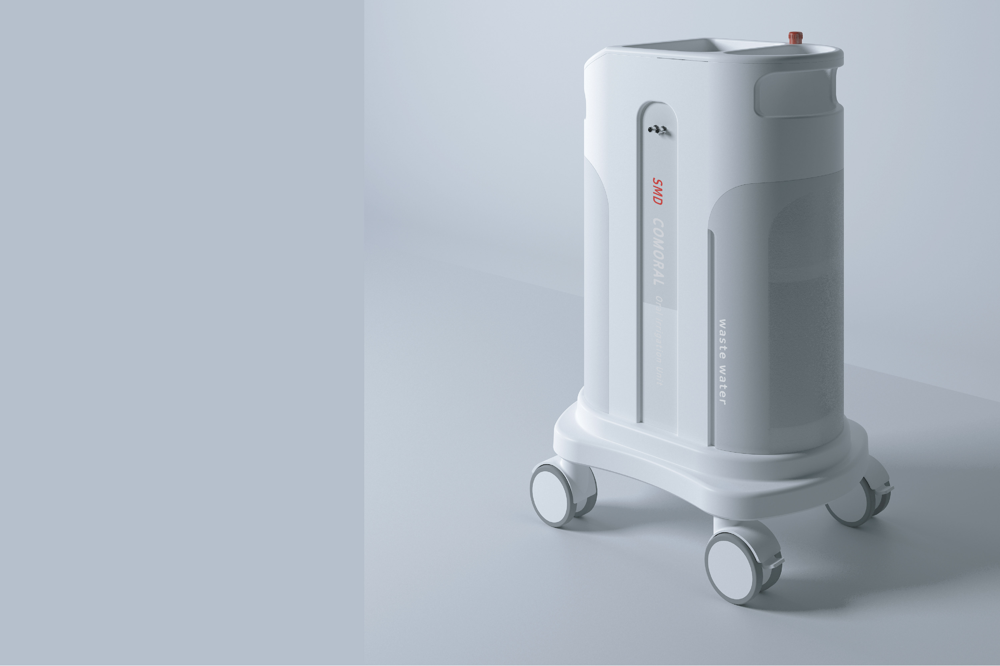
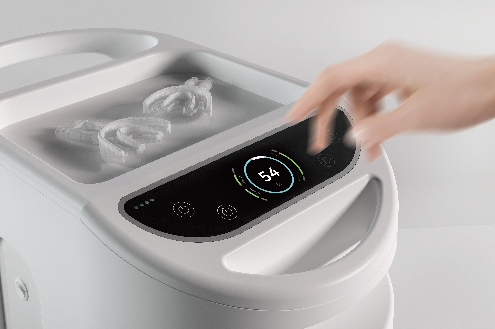
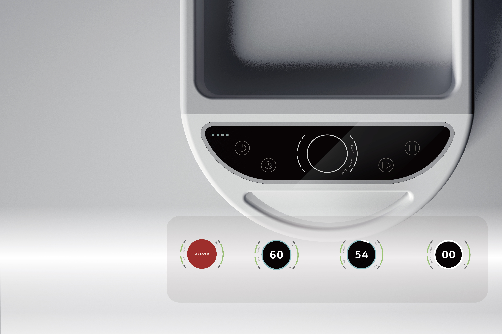
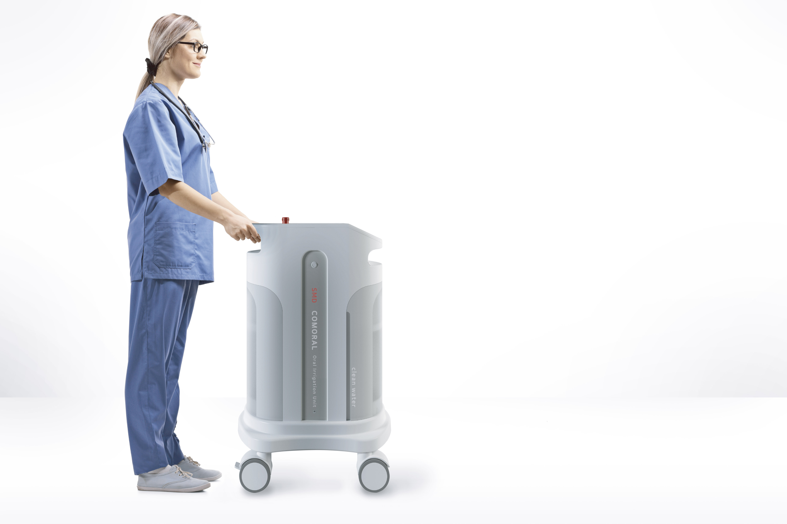

COMORAL — Oral-care Device for Elderly
An oral care medical device for elderly patients in nursing homes. Designed to reduce the risk of aspiration pneumonia and the burden on caregivers through guided suction and hygienic flow.
↓ 35%
Care time per session
Hygiene
Closed suction path
UX
Guided prompts & cues
Overview
COMORAL is an oral irrigation device in which a microbubble technology is applied to clean teeth and at the same time remove bacteria and germs in the mouth. The device is especially designed for elderly inpatients in a ward or sanatorium, who have experienced difficulties of properly cleaning their teeth and mouth.
Details
Role
Product/Interaction Design · UX Research
Interfaces
Color-coded tips · LED/audio prompts · one-hand latch
Hygiene
Closed suction path · disposable cartridge
Year
2024–2025
Team
Clinicians · Caregivers · Engineering
Gallery





← Back to Projects